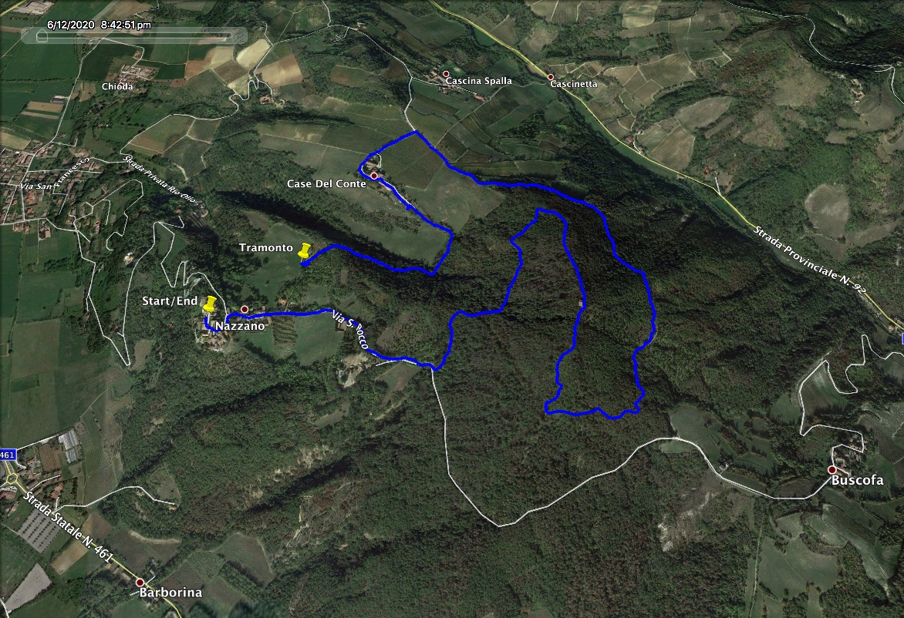

gite <- as.data.frame(readxl::read_excel(here::here( "reference","Gite.xlsx")) )%>%
janitor::clean_names()
# ---- 1) using kableExtra
gite %>%
#select(-phone, -address, -country, -title, -mef_ref_person) %>%
kable(., align = "l", escape = F#, format = "latex"
) %>%
kable_styling(bootstrap_options = "striped",
full_width = F, # x non occupare tutta la larghezza
position = "left") %>%
column_spec(column = 1, bold = T, color = "white", background = "#D7261E") %>%
column_spec(column = 3, bold = T, color = "blue") %>%
#scroll_box(width = "1000px"
#, height = "500px"
#) %>%
footnote(., footnote_as_chunk = F,
escape = T,
general = "Clarifications:",
#number = c("Footnote 1; ", "Footnote 2; "),
alphabet = c("**T** - Turistico: Passeggiata su strade sterrate e ampi sentieri con pendenze modeste, dislivelli inferiori a 300 m e sviluppo inferiore a 10 km. **E** - Escursionistico: Escursione semplice ma che richiede una buona forma fisica senza dover essere degli atleti. Percorsi su sterrate, ampi sentieri a scarsa pendenza ma anche sentieri di montagna più articolati e con pendenze leggermente maggiori. Dislivelli compresi fra 300 e 600 m. Sviluppo tra 10 e 15 km. **EE** - Escursionisti Esperti: Escursione per i più esperti e allenati. Rimangono escursioni con difficoltà tecniche comunque mai eccessive (eventuali brevi tratti esposti con catene, sentieri ripidi, tracce di sentiero, brevi tratti di roccette di primo grado, eventuale attraversamento di nevai) ma occorre avere una buona esperienza escursionistica e un buon allenamento. Pendenze a tratti sostenute. Dislivelli anche oltre i 600 m. Sviluppo anche oltre i 15 km. **EEA** - Escursionisti Esperti Attrezzati: Percorso attrezzato che richiede l'utilizzo dell'attrezzatura per via ferrata. **EAI** - Escursionisti in Ambiente Innevato: Itinerario in ambiente innevato che richiede l'uso di racchette da neve, ma comunque su terreno senza grandi pendenze, con percorsi evidenti, e senza tratti esposti."),
#symbol = c("Footnote Symbol 1; ", "Footnote Symbol 2")
)| livello | catena | citta_provincia | nome | rif_partenza | rif_arrivo | durata | dislivello | note | data | link_web | link_web2 | persona_di_rif |
|---|---|---|---|---|---|---|---|---|---|---|---|---|
| T | bassa Valle Staffora (PV) | Nazzano (PV)Anello di Nazzano | NA | Parcheggio Nazzano (vicino ristorante) | (giro ad anello) | 2:13:59 | 215 | NA | 12 Giu 2020 | Programma |  | Pierre Greppi |
| Note: | ||||||||||||
| Clarifications: | ||||||||||||
| a T - Turistico: Passeggiata su strade sterrate e ampi sentieri con pendenze modeste, dislivelli inferiori a 300 m e sviluppo inferiore a 10 km. E - Escursionistico: Escursione semplice ma che richiede una buona forma fisica senza dover essere degli atleti. Percorsi su sterrate, ampi sentieri a scarsa pendenza ma anche sentieri di montagna più articolati e con pendenze leggermente maggiori. Dislivelli compresi fra 300 e 600 m. Sviluppo tra 10 e 15 km. EE - Escursionisti Esperti: Escursione per i più esperti e allenati. Rimangono escursioni con difficoltà tecniche comunque mai eccessive (eventuali brevi tratti esposti con catene, sentieri ripidi, tracce di sentiero, brevi tratti di roccette di primo grado, eventuale attraversamento di nevai) ma occorre avere una buona esperienza escursionistica e un buon allenamento. Pendenze a tratti sostenute. Dislivelli anche oltre i 600 m. Sviluppo anche oltre i 15 km. EEA - Escursionisti Esperti Attrezzati: Percorso attrezzato che richiede l’utilizzo dell’attrezzatura per via ferrata. EAI - Escursionisti in Ambiente Innevato: Itinerario in ambiente innevato che richiede l’uso di racchette da neve, ma comunque su terreno senza grandi pendenze, con percorsi evidenti, e senza tratti esposti. |
# ---- 2) using DT::datatable
# gite %>%
# select(-phone, -address, -country, -title, -mef_ref_person) %>%
# datatable(.,
# filter = 'top',
# options = list(pageLength = 50, autoWidth = TRUE,
# escape = TRUE # argument so that it doesn't escape the HTML code.
# )) %>%
# formatStyle('name', color = 'blue', backgroundColor = 'orange', fontWeight = 'bold')
# # ---- 3) using pander::pandoc.table
# caption <- "Description of indexes of NGO barriers {#tbl:ngo-barriers-index}"
#
# gite.table <- pandoc.table.return(gite, keep.line.breaks = TRUE,
# round = 2,
# big.mark = ",",
# justify = "lllllllllllll", # OKKIO AL # DI COLONNE
# caption = caption, style = "multiline",
# split.table = Inf
# )
# cat(gite.table)Copyright © 2020 Luisa M. Mimmi